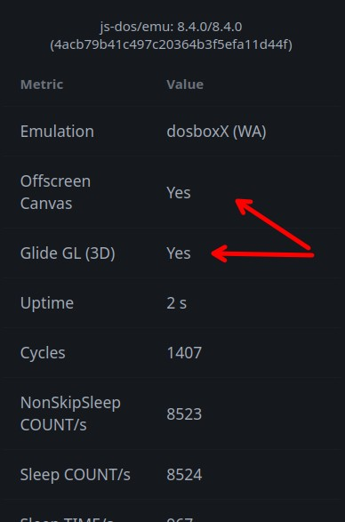

3Dfx
js-dos can run 3Dfx games in browser with hardware-accelerated rendering. The emulation uses DOSBox-X Voodoo support, and js-dos connects it to the browser through WebGL.
Use this mode for DOS or Windows 9x games that support 3Dfx/Glide rendering.
DOS games usually include the needed Glide runtime with the game. Windows 9x games need a 3Dfx driver installed inside the guest OS.
Requirements
3Dfx acceleration needs:
DOSBox-X backend
WebGL renderer
OffscreenCanvas rendering, so the backend can own the WebGL context
Voodoo enabled in
dosbox.conf3Dfx drivers installed inside Windows 9x, if you run a Windows game
Player options
Configure the player to start DOSBox-X with WebGL and OffscreenCanvas:
offscreenCanvas: true is important. Without it, the browser page can still use WebGL to draw normal DOS frames, but the DOSBox-X backend will not receive the WebGL context required for accelerated Voodoo rendering.
DOSBox-X config
Enable the Voodoo card in dosbox.conf:
voodoo_card=opengl selects the accelerated path used by js-dos. Keep glide=false for browser builds: js-dos uses internal Voodoo emulation rendered through WebGL, not a native host Glide wrapper.
For Windows 9x bundles, keep the regular DOSBox-X Windows settings as well. A minimal useful base is:
Windows 9x drivers
Windows 9x games need a 3Dfx driver installed in the guest OS. You can use the same workflow as any other Windows driver:
Upload the extracted 3Dfx driver folder to the bundle.
Mount the uploaded files before booting Windows, for example with
mount d: ..Boot Windows 95/98.
Open Device Manager and update the Voodoo/PCI Multimedia Device driver from drive
D:.Reboot Windows.
For games that require DirectX, install the DirectX version expected by the game after the 3Dfx driver is installed. See Install OS for the detailed Windows 9x driver steps.
Verify acceleration
Open the player stats panel while the game is running. Glide GL (3D) should show Yes. The browser console may also contain glfx enabled when DOSBox-X initializes the WebGL Voodoo path.

If Glide GL (3D) is No, check these items first:
the bundle uses
backend: "dosboxX"offscreenCanvasis enabled and supported by the browserrenderBackendiswebgldosbox.confcontains[voodoo]withvoodoo_card=openglthe page is running in a browser with WebGL enabled
Performance tips
Large Windows 9x and 3Dfx games are good candidates for Sockdrive, because disk images can be too large to ship as one bundle. When publishing sockdrive data, serve it compressed with Brotli or gzip and use a CDN when possible.
Use the turbo panel to tune CPU speed, cycles, fast forward, and frame skip. Some games are more stable with fixed CPU cycles than with automatic CPU adjustment.